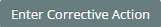
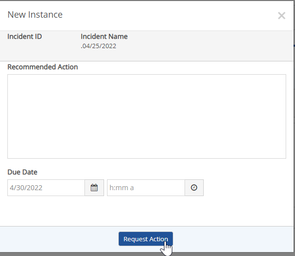
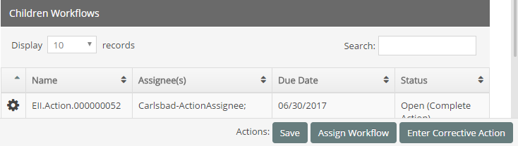

Some sub-forms, such as the Root Cause Analysis form, include the option of creating corrective actions that are related to that specific process rather than the overall Incident. The option to create a corrective action from a sub-form will depend on the configuration.
To create a Corrective Action:
Select the Corrective Action button (wording may vary).

Click Request Action to save and assign the corrective action.

You will be returned to the tab form. The corrective action will be shown as a child workflow at the bottom of the form.
